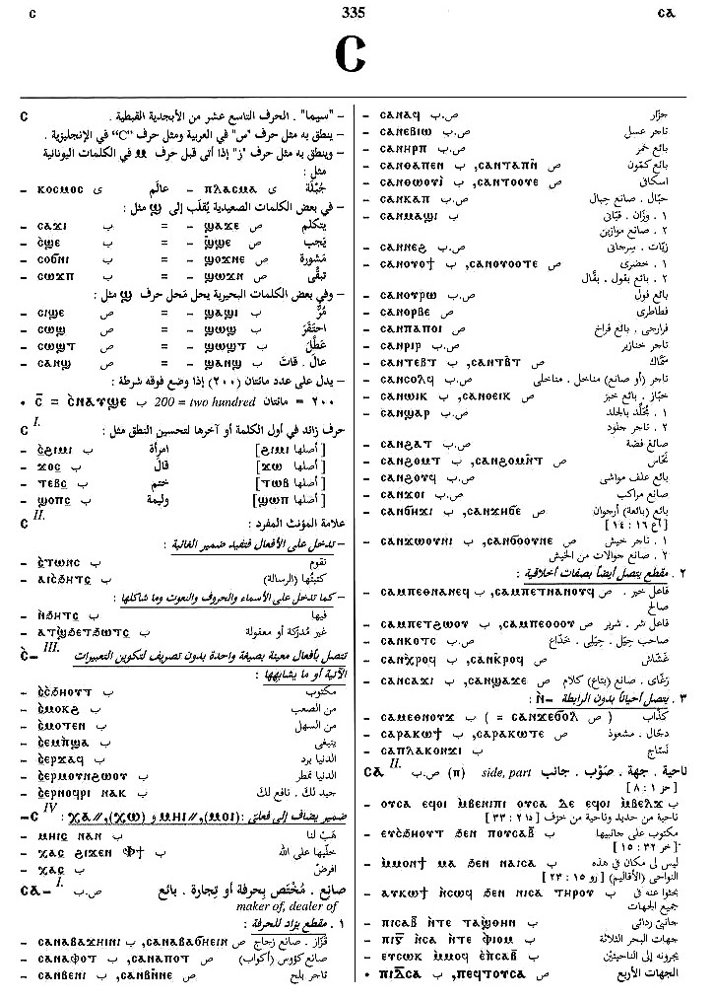

(noun male)
side, part [μεροσ, κλιμα]
(S, A, sA, B)
ⲥⲁ
(Sa, F) ⲥⲉ
(Sa, F) ⲥⲉ
| (B) ⲉⲃⲟⲗ ⲥⲁ- | from the side, from [απο]1671 | Crum: 313b | |||||||
| (S, B) ⲕⲉⲥⲁ | other part, apart, elsewhere1672 | ||||||||
| (S,
sA,
B,
F,
O) ⲛⲥⲁ-
(prep.)
(sA, B) ⲥⲁ- (prep.) (F) ⲉⲥⲁ- (prep.) (A) ⲛⲥⲉ- (prep.) (A, F) ⲥⲉ- (prep.) (S, A, sA, B, F) ⲛⲥⲱ= (prep.) (S) ⲛⲥⲱⲧⲛ, ⲛⲥⲁⲧⲏⲩⲧⲛ (ⲛ) |
(preposition)
behind, after lit or figur S, independent of vb ― against ― rarely from except, beyond S,A,B,F [ει μη, η, αλλα η, αλλα και, πλην, πλειον η] with impers ⲉⲥ-, it is (incubent, depends) upon1673 |
Crum: 314a | |||||||
| (S)
ⲡⲥⲁⲥⲁ ⲛⲓⲙ,
ⲥⲁⲥⲁ ⲛⲓⲙ
(B) ⲥⲁⲥⲁ ⲛⲓⲃⲉⲛ (F) ⲡⲥⲁⲥⲉ ⲛⲓⲃⲉⲛ |
on every side1674 | ||||||||
| (S, F)
ⲛⲥⲁⲟⲩⲥⲁ
(S) ⲛⲥⲁⲩⲥⲁ (S, B) ⲥⲁⲟⲩⲥⲁ (B) ⲥⲁⲡⲥⲁ |
on a side, apart [εν μερει, κατ ιδιαν]1675 | ||||||||
| (S)
ⲛⲥⲁⲗⲁⲁⲩ
ⲡⲥⲁ, ⲥⲁⲗⲁⲁⲩ ⲡⲥⲁ
(B) ⲛⲥⲁϩⲗⲓ ⲡⲥⲁ |
on any (no) side1676 | Crum: 314b | |||||||
| (S, sA, F, O)
ⲙⲛⲛⲥⲁ-
(S) ⲛⲙⲛⲥⲁ- (B, F) ⲙⲉⲛⲉⲛⲥⲁ- (F) ⲙⲉⲛⲉⲥⲁ-, ⲙⲉⲛⲛⲉⲥⲁ- (NH) ⲙⲛⲛⲥⲉ- (S, A, B, F) ⲙⲉⲛⲉⲥⲱ= |
after of time
― with nn or pron [μετα, οπισω, επεκεινα, επειτα, υστερον] ―― ⲙ. . ⲉⲃⲟⲗ S, meaning same ― with ⲧⲣⲉ- ⲉⲧⲣⲉ-, ⲡⲧⲣⲉ- S, ⲛⲧⲉ- A, ⲧⲉ- sA, ⲑⲣⲉ- B, ⲉⲧⲣⲉ- F + vb [μετα το, δια το]1677 |
||||||||
| (S, A, sA)
ⲙⲛⲛⲥⲱⲥ
(B, F) ⲙⲉⲛⲉⲛⲥⲱⲥ (F) ⲙⲛⲥⲟⲥ, ⲙⲛⲛⲥⲟⲥ |
afterward [μετα τουτο, ειτα, επειτα]1678 | Crum: 315a | |||||||
See also:
Crum: 313,314,315

313

314

315
Dawoud: 335b-336b,
223b-224a, 341b-342a,
144b

335

336

223

224

341

342

144